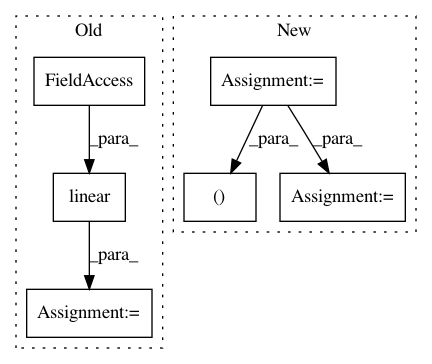

4608f590d88eeaf1661e3911a7ee943f75269321,hypergan/losses/category_loss.py,CategoryLoss,_create,#CategoryLoss#Any#Any#,5
Before Change
def _create(self, d_real, d_fake):
// TODO get the d_last_layer
category_layer = linear(d_last_layer, sum(config["categories"]), "v_categories",stddev=0.15)
category_layer = batch_norm(config["batch_size"], name="v_cat_loss")(category_layer)
category_layer = config["generator.activation"](category_layer)
categories_l = categories_loss(categories, category_layer, config["batch_size"])
g_losses.append(-1*config["categories_lambda"]*categories_l)
After Change
def _create(self, d_real, d_fake):
gan = self.gan
ops = self.ops
config = self.config
categories = config.categories
activation = ops.lookup(config.activation)
//TODO broken.
// TODO get the d_last_layer
category_layer = gan.discriminator.ops.linear(d_real, sum(config.categories))
category_layer= ops.layer_regularizer(d_real, config.layer_regularizer, config.batch_norm_epsilon)
category_layer = activation(category_layer)
loss = self.categories_loss(categories, category_layer)
loss = -1*config.category_lambda*loss
d_loss = loss
g_loss = loss
return d_loss, g_loss
def split_categories(layer, batch_size, categories):
start = 0
In pattern: SUPERPATTERN
Frequency: 3
Non-data size: 6
Instances
Project Name: HyperGAN/HyperGAN
Commit Name: 4608f590d88eeaf1661e3911a7ee943f75269321
Time: 2017-06-07
Author: martyn@255bits.com
File Name: hypergan/losses/category_loss.py
Class Name: CategoryLoss
Method Name: _create
Project Name: NVIDIA/sentiment-discovery
Commit Name: 8030eeca74b6634f2a60168516573912aaa9cd65
Time: 2018-11-20
Author: raulp@nvidia.com
File Name: model/model.py
Class Name: TransformerFeaturizer
Method Name: forward
Project Name: wenwei202/iss-rnns
Commit Name: ea9252e21b93dbc8286490ecd865798c3ee07abc
Time: 2016-09-11
Author: seominjoon@gmail.com
File Name: basic/model.py
Class Name: Model
Method Name: _build_forward